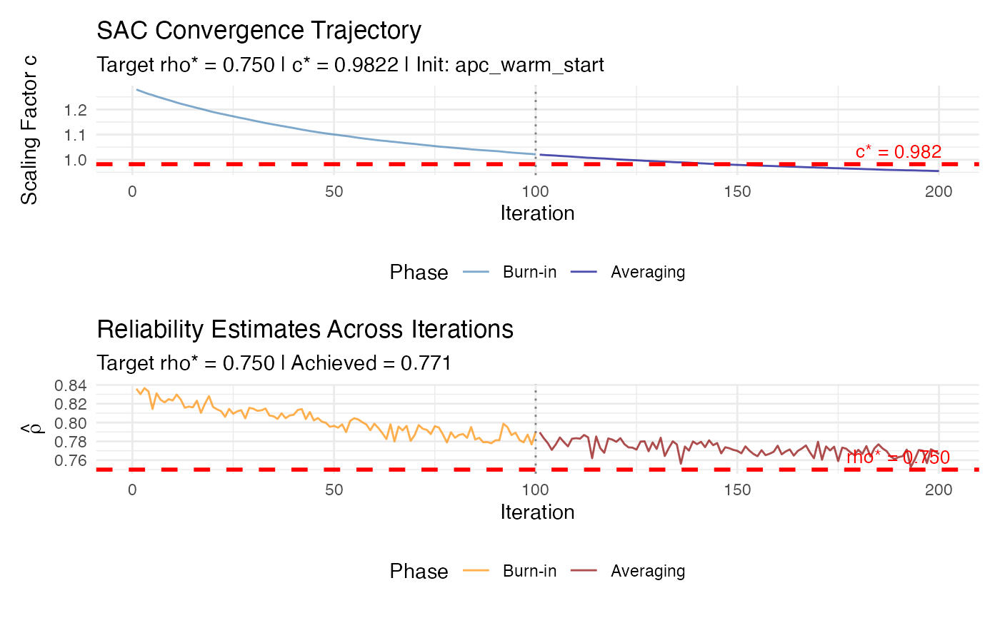

Stochastic Approximation Calibration (Algorithm 2: SAC)
sac_calibrate.Rdsac_calibrate() implements Algorithm 2 (Stochastic Approximation
Calibration, SAC) for reliability-targeted IRT simulation using the
Robbins-Monro stochastic approximation algorithm.
Given a target marginal reliability \(\rho^*\), a latent distribution
generator sim_latentG() (for \(G\)) and an item parameter generator
sim_item_params() (for \(H\)), the function iteratively searches for a
global discrimination scale \(c^* > 0\) such that the population
reliability \(\rho(c)\) of the Rasch/2PL model is approximately equal to
\(\rho^*\).
SAC complements EQC (Algorithm 1) by:
Providing an independent validation of EQC calibration results.
Enabling calibration to the MSEM-based reciprocal-information reliability \(\bar{w}\) (not just the average-information metric \(\tilde{\rho}\)).
Handling complex data-generating processes where analytic information functions may be unavailable.
The algorithm uses the Robbins-Monro update rule: $$c_{n+1} = c_n - a_n \cdot (\hat{\rho}_n - \rho^*)$$
where \(a_n = a / (n + A)^\gamma\) is a decreasing step size sequence satisfying \(\sum a_n = \infty\) and \(\sum a_n^2 < \infty\).
Usage
sac_calibrate(
target_rho,
n_items,
model = c("rasch", "2pl"),
latent_shape = "normal",
item_source = "parametric",
latent_params = list(),
item_params = list(),
reliability_metric = c("msem", "info", "bar", "tilde"),
c_init = NULL,
M_per_iter = 500L,
M_pre = 10000L,
n_iter = 300L,
burn_in = NULL,
step_params = list(),
c_bounds = c(0.01, 20),
resample_items = TRUE,
seed = NULL,
verbose = FALSE
)
# S3 method for class 'sac_result'
print(x, digits = 4, ...)
# S3 method for class 'sac_result'
summary(object, ...)Arguments
- target_rho
Numeric in (0, 1). Target marginal reliability \(\rho^*\).
- n_items
Integer. Number of items in the test form.
- model
Character. Measurement model:
"rasch"or"2pl". For"rasch", all baseline discriminations are set to 1 before scaling.- latent_shape
Character. Shape argument passed to
sim_latentG()(e.g."normal","bimodal","heavy_tail", ...).- item_source
Character. Source argument passed to
sim_item_params()(e.g."parametric","irw","hierarchical","custom"). Defaults to"parametric"so core workflows do not require external item-pool data. Use"irw"for empirically-grounded difficulties when the Item Response Warehouse package is installed.- latent_params
List. Additional arguments passed to
sim_latentG().- item_params
List. Additional arguments passed to
sim_item_params().- reliability_metric
Character. Reliability definition used inside SAC:
"msem"MSEM-based reciprocal-information reliability (targets \(\bar{w}\)).
"info"Average-information reliability (faster, targets \(\tilde{\rho}\)).
Synonyms:
"bar"for"msem","tilde"for"info".- c_init
Numeric,
eqc_resultobject, or NULL. Initial value for the scaling factor \(c_0\).If an
eqc_resultobject is provided, itsc_staris used (warm start).If a numeric value is provided, it is used directly.
If NULL, initialized using Analytic Pre-Calibration (APC).
Providing a warm start from EQC greatly accelerates convergence.
- M_per_iter
Integer. Number of Monte Carlo samples per iteration for estimating reliability. Default: 500. Larger values reduce variance but increase computation time.
- M_pre
Integer. Number of Monte Carlo samples for pre-calculating the latent variance \(\sigma^2_\theta\). Default: 10000. This variance is fixed throughout the iterations for stability. This is a CRITICAL parameter for numerical stability.
- n_iter
Integer. Total number of Robbins-Monro iterations. Default: 300.
- burn_in
Integer. Number of initial iterations to discard before Polyak-Ruppert averaging. Default:
floor(n_iter / 2).- step_params
List. Parameters controlling the step size sequence:
aBase step size (default: 1.0)
AStabilization constant (default: 50)
gammaDecay exponent (default: 0.67, i.e., 2/3)
- c_bounds
Numeric length-2 vector. Projection bounds for \(c\). Iterates are clipped to this interval after each update. Default: c(0.01, 20).
- resample_items
Logical. If TRUE (default), resample item parameters at each iteration. If FALSE, fix item parameters across all iterations (reduces variance but may introduce bias).
- seed
Optional integer for reproducibility.
- verbose
Logical or integer. If TRUE or >= 1, print progress messages. If >= 2, print detailed iteration-level output.
- x
An object of class
"sac_result".- digits
Integer. Number of decimal places for printing.
- ...
Additional arguments passed to or from other methods.
- object
An object of class
"sac_result".
Value
An object of class "sac_result" (a list) with elements:
c_starCalibrated discrimination scale (Polyak-Ruppert average).
c_finalFinal iterate \(c_{n_{iter}}\).
target_rhoTarget reliability \(\rho^*\).
achieved_rhoEstimated reliability at \(c^*\) (post-calibration).
theta_varPre-calculated latent variance used throughout.
trajectoryNumeric vector of all iterates.
rho_trajectoryNumeric vector of reliability estimates.
raw_trajectoryUnprojected proposal values before clipping to
c_bounds.step_size_trajectoryRobbins-Monro step size \(a_n\) at each iteration.
gradient_trajectoryStochastic gradient estimate \(\hat{\rho}_n - \rho^*\) at each iteration.
projectedLogical vector indicating whether projection was applied at each iteration.
projection_sideCharacter vector indicating lower/upper/no projection at each iteration.
projection_countNumber of iterations where projection onto
c_boundswas applied.projection_rateProportion of iterations where projection was applied.
M_finalMonte Carlo sample size used for the post-calibration reliability estimate.
metricReliability metric used.
calibration_statusCanonical status label copied from
convergence$status.modelMeasurement model.
n_itemsNumber of items.
n_iterTotal number of Robbins-Monro iterations.
burn_inNumber of initial iterations excluded from averaging.
M_per_iterMonte Carlo sample size per iteration.
M_preMonte Carlo sample size used to estimate latent variance.
step_paramsStep-size parameters used by the run.
c_boundsProjection bounds for \(c\).
c_initInitial scaling factor after any projection.
init_methodCharacter indicating initialization method.
convergenceList with convergence diagnostics.
item_designWhether stored item fields are a
"post_calibration_draw"or the"fixed_iteration_items".beta_vecItem difficulties from the stored item design.
lambda_baseBaseline (unscaled) item discriminations.
lambda_scaledScaled item discriminations (
lambda_base * c_star).items_baseBaseline item_params object (scale = 1).
items_calibCalibrated item_params object (discriminations scaled by c_star).
theta_quadTheta sample used for post-calibration reliability estimate.
callMatched function call.
The stored item fields use the final post-calibration item draw at baseline
scale 1 when resample_items = TRUE. When resample_items = FALSE,
they reuse the fixed item form used throughout the Robbins-Monro iterations.
In both cases, the calibrated design applies the Polyak-Ruppert average
c_star, not the last Robbins-Monro iterate c_final. Thus
lambda_scaled and items_calib$data$lambda equal
lambda_base * c_star.
For same-estimand comparisons with an eqc_result warm start, set
reliability_metric = "info" in sac_calibrate(). SAC defaults
to direct MSEM targeting ("msem"), while EQC targets the
average-information metric ("info").
spc_calibrate() is a deprecated backward-compatible alias for
sac_calibrate().
The input object, invisibly.
An object of class "summary.sac_result" containing key
calibration results.
References
Robbins, H., & Monro, S. (1951). A stochastic approximation method. The Annals of Mathematical Statistics, 22(3), 400–407.
Polyak, B. T., & Juditsky, A. B. (1992). Acceleration of stochastic approximation by averaging. SIAM Journal on Control and Optimization, 30(4), 838–855.
See also
eqc_calibrate for the faster deterministic Algorithm 1,
compute_rho_bar and compute_rho_tilde for
reliability computation utilities,
compare_eqc_sac for comparing EQC and SAC results.
Examples
# \donttest{
# Example 1: Basic SAC calibration
sac_result <- sac_calibrate(
target_rho = 0.75,
n_items = 20,
model = "rasch",
n_iter = 200,
seed = 12345,
verbose = TRUE
)
#>
#> ================================================================
#> Stochastic Approximation Calibration (SAC)
#> ================================================================
#>
#> Configuration:
#> Target reliability : 0.7500
#> Number of items : 20
#> Model : RASCH
#> Reliability metric : msem
#> M per iteration : 500
#> M for variance pre-calc: 10000
#> Total iterations : 200
#> Burn-in : 100
#> Resample items : Yes
#> Step params: a=1.00, A=50, gamma=0.67
#>
#> Step 0: Pre-calculating latent variance...
#> Estimated theta_var = 0.9997 (from M_pre = 10000 samples)
#>
#> Step 1: Initializing c_0...
#> c_0 = 1.2853 (APC warm start)
#> Step 3: Running 200 Robbins-Monro iterations...
#> [ 10%] Iter 20: c = 1.1899, rho = 0.8166
#> [ 20%] Iter 40: c = 1.1260, rho = 0.8083
#> [ 30%] Iter 60: c = 1.0792, rho = 0.7988
#> [ 40%] Iter 80: c = 1.0470, rho = 0.7838
#> [ 50%] Iter 100: c = 1.0214, rho = 0.7900
#> [ 60%] Iter 120: c = 1.0018, rho = 0.7796
#> [ 70%] Iter 140: c = 0.9865, rho = 0.7770
#> [ 80%] Iter 160: c = 0.9741, rho = 0.7754
#> [ 90%] Iter 180: c = 0.9636, rho = 0.7710
#> [100%] Iter 200: c = 0.9549, rho = 0.7665
#>
#> Step 4: Computing Polyak-Ruppert average...
#> Polyak-Ruppert c* = 0.982170 (averaging 100 iterates)
#>
#> Step 5: Computing post-calibration reliability...
#>
#> Step 6: Computing convergence diagnostics...
#>
#> ================================================================
#> SAC Calibration Complete
#> ================================================================
#> Target reliability : 0.7500
#> Achieved reliability : 0.7714
#> Absolute error : 0.0214
#> Calibrated c* : 0.982170
#> Final iterate c_n : 0.954920
#> Init method : apc_warm_start
#> Converged : Yes
#>
print(sac_result)
#>
#> =======================================================
#> Stochastic Approximation Calibration (SAC) Results
#> =======================================================
#>
#> Calibration Summary:
#> Model : RASCH
#> Target reliability (rho*) : 0.7500
#> Achieved reliability : 0.7714
#> Absolute error : 2.14e-02
#> Scaling factor (c*) : 0.9822
#>
#> Algorithm Settings:
#> Number of items (I) : 20
#> M per iteration : 500
#> M for variance pre-calc : 10000
#> Total iterations : 200
#> Burn-in : 100
#> Reliability metric : MSEM-based (bar/w)
#> Step params: a=1.00, A=50, gamma=0.67
#>
#> Convergence Diagnostics:
#> Initialization method : apc_warm_start
#> Initial c_0 : 1.2853
#> Final iterate c_n : 0.9549
#> Polyak-Ruppert c* : 0.9822
#> Pre-calculated theta_var : 0.9997
#> Converged : Yes
#> Post-burn-in SD : 0.0189
#> Final iter gradient : +0.0165
#> Gradient at c* : +0.0214
#> Projection count : 0 (0.0%)
#> Status flags : ok
#>
plot(sac_result)

# Example 2: Warm start from EQC (RECOMMENDED)
eqc_result <- eqc_calibrate(
target_rho = 0.80,
n_items = 25,
model = "2pl",
M = 10000,
seed = 42
)
sac_result <- sac_calibrate(
target_rho = 0.80,
n_items = 25,
model = "2pl",
reliability_metric = "info",
c_init = eqc_result, # Direct EQC object passing!
n_iter = 100,
seed = 42
)
# Compare EQC and SAC results
cat(sprintf("EQC c* = %.4f, SAC c* = %.4f\n",
eqc_result$c_star, sac_result$c_star))
#> EQC c* = 0.8386, SAC c* = 0.8566
# }